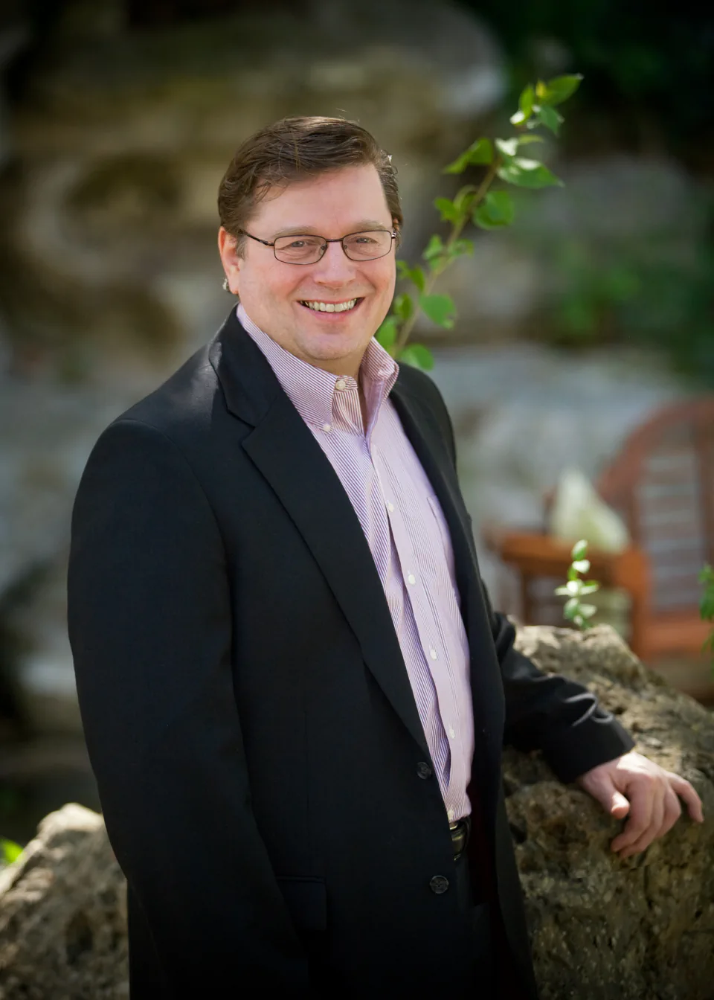
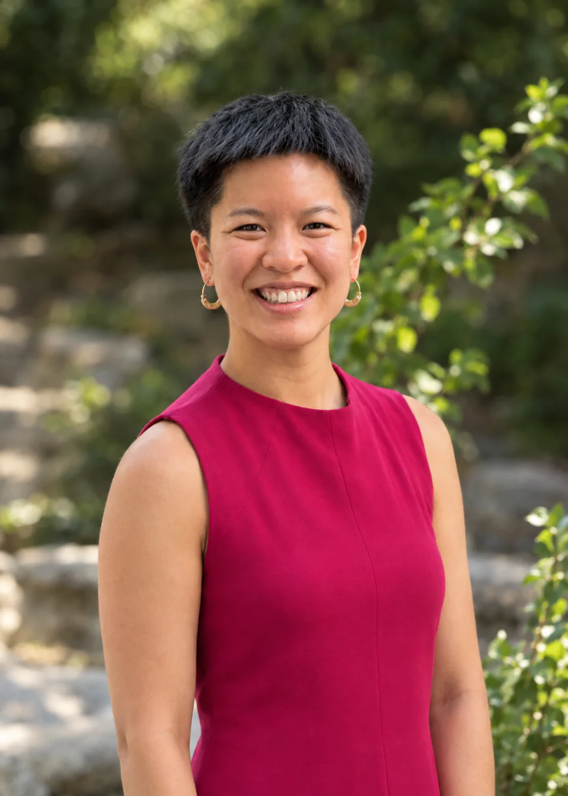

Executive coaching
A thoughtful partner for the decisions, challenges, and responsibilities of leadership. Develop perspective, lead with intention, and bring your best to the people who depend on you.
Executive coaching & organizational consulting
We help leaders see what’s possible, bring people together, and turn a shared vision into meaningful progress.
Explore our expertiseThe work behind the progress
Every organization has talent, ambition, and a reason to exist. But unclear direction, difficult conversations, and disconnected teams can get in the way.
We work directly with the CEO and executive team. Together, we uncover those barriers, clarify what matters, and build the relationships and structures that move an organization forward.
Our expertise
A thoughtful partner for the decisions, challenges, and responsibilities of leadership. Develop perspective, lead with intention, and bring your best to the people who depend on you.
Make your vision clear enough to act on. Connect leadership’s intentions with the priorities, structures, and day-to-day decisions that shape your organization.
Help capable people become a more effective team. Work through relational barriers, strengthen trust, and build a shared commitment to the work ahead.
Make room for the conversations that matter. Develop clearer communication and work through difficult issues with a constructive, independent perspective.
Our people
A shared commitment to integrity and the potential in people.

Founder & executive coach
Bruce founded The Saxton Group in 1989 with a vision of bringing greater integrity to the business world.
His consulting practice has helped hundreds of organizations address the systemic and relational barriers that hold people back. He works with leaders to define their vision and put the structures and systems in place to carry it through.
His experience spans start-ups, Fortune 5 companies, government, nonprofits, turnarounds, and mediation.

Consultant
Kristen believes strong organizations start and end with authentic communication and personal and professional integrity. Together, they create a new world in an organization, where remarkable business results are possible for everyone in it.
At Fox Hill Village, a continuing care retirement community, she is the assisted living sales manager and community liaison. She expanded the community's network to several hundred contacts, uncovered new referral sources, and built the systems to support them: a better waitlist structure, referral newsletters, and a paid-referral contract.
Much of Kristen's training comes through Landmark Worldwide, where she graduated from the Leadership Training Program and is now in training to lead personal development seminars. Before senior living, she was a journalist and documentary filmmaker, with work in The Boston Globe and Nieman Storyboard, including a feature that led to legislative change. She also runs her own real estate development company and speaks Mandarin.
She holds a master's in journalism from Boston University and a bachelor's in environmental policy from Washington University in St. Louis.
A conversation is a good place to start
Tell us where you are and what you’re working toward.
Let’s explore how we can help.